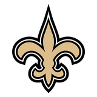

패커스이슈
패커스이슈패커스 RB 조시 제이컵스가 자택에서 있었던 여성 관련 사건으로 체포된 뒤 처음 입을 열고 "실수에서 배우고 앞으로 나아가겠다"고 말했어요.
 NE
NE CHI
CHI PIT
PIT
NO SF
SF ATL
ATL CLE
CLE TEN
TEN IND
IND MIN
MIN MIA
MIA NYJ
NYJ TB
TB CAR
CAR CIN
CIN BAL
BAL NYG
NYG HOU
HOU DEN
DEN ARIGB
ARIGB DET
DET KC
KC SEA
SEA DAL
DAL PHI
PHI LAR@
LAR@ LV패커스이슈
LV패커스이슈패커스 RB 조시 제이컵스가 자택에서 있었던 여성 관련 사건으로 체포된 뒤 처음 입을 열고 "실수에서 배우고 앞으로 나아가겠다"고 말했어요.
 빌스징계
빌스징계리그는 레이더스전 비신사적 행위(침 뱉기)를 이유로 1경기 정지를 내렸고, 선수 측은 항소했어요. 빌스는 이번 주 BYE예요.
파리 시내 소요 사태에도 일요일 세인츠–스틸러스 파리 경기(10/25 일 밤 10:30 KST)는 안전하게 치를 수 있다고 밝혔어요.